AIで画像を作ってみたけれど、なんだかチープなものしか出てこない。そんな話をよく聞きます。だいたいの場合、原因はAIの性能ではなく、たのみ方のほうにあります。
ある日、Adobe Fireflyで思いつくままに19枚を作ってみました。結果は18枚が「これは使える」、1枚が失敗。あとから並べてみると、当たった18枚のたのみ方は、驚くほど同じ形をしていました。
ここでは、その形を4つの言い方として置いておきます。作例は19枚とも、実際に投げた言葉をそのまま載せました。失敗した1枚も隠さず載せています。うまくいかなかった理由のほうが、たぶん役に立つからです。
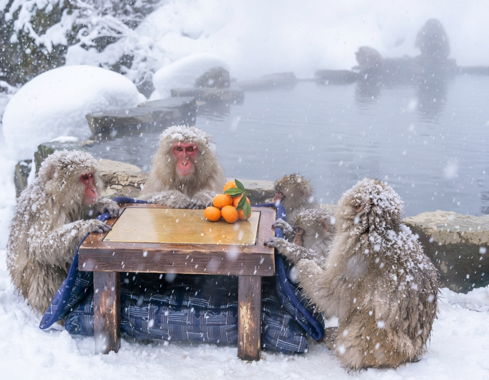
言うのはこれだけです。順番もこのままで大丈夫です。
| ① 何が | 主役と、その主役が今している動き。「カピバラ」ではなく「丸メガネをかけて実験をしているカピバラ」。 |
|---|---|
| ② どこで | 場所を具体的に。「学校」ではなく「古い理科室」。日本の場所なら日本と書く。 |
| ③ どんな光で | 時間帯と光。「午後のやわらかい日ざし」「夜の蛍光灯」「朝もや」。ここが写真らしさをいちばん左右します。 |
| ④ どう撮ったか | 写真の種類。「ドキュメンタリー写真」「スポーツ写真」「望遠で」「料理の接写で」。カメラマンへの指示だと思えば当たります。 |
[ ] のところを自分の思いつきに入れかえて、Fireflyのプロンプト欄に貼ってください。日本語でも通じますが、英語のほうが指示どおりに出やすいので、英語版も置いておきます。
[主役]が[している動き]、場所は[具体的な場所]、[時間帯と光のようす]、[写真の種類]で撮った写真
例：ハリネズミが寿司をにぎっている、場所は小さな木のカウンター、あたたかい提灯の光、料理の接写で撮った写真
[主役 and what it is doing], [where, be specific], [time of day and light], photorealistic [type of photography]
英語が不安なら、日本語で書いた文をそのままAIに「英語の画像生成プロンプトにして」と頼めば十分です。
すべてAdobe FireflyのImage 5で、1枚につき1回だけ。描き直しはしていません。プロンプトはコピーして、そのまま試せます。
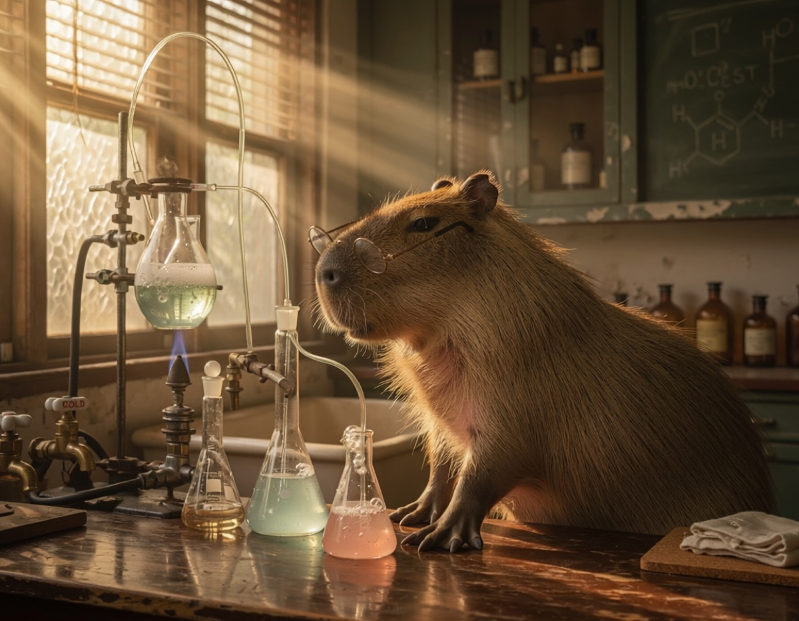
「ほこりの舞う窓からの午後の光」を足したところで、いっきに写真になりました。動物ものの入口としていちばん確実です。
A capybara wearing tiny round glasses conducting a chemistry experiment with bubbling beakers in an old Japanese school science lab, photorealistic documentary photo, warm afternoon sunlight through dusty windows
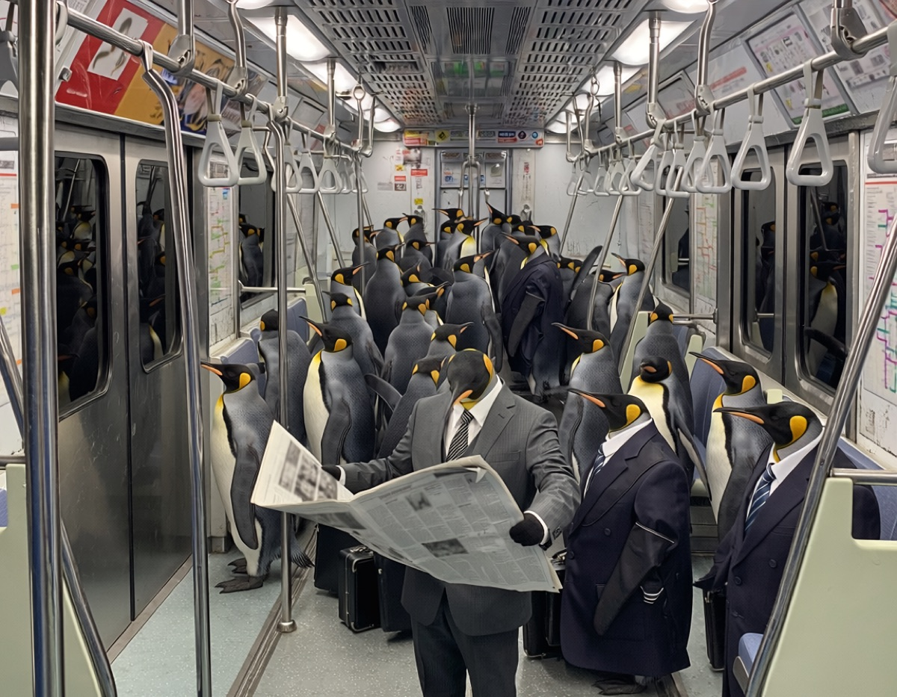
「1羽だけ新聞を読んでいる」と足しています。全員に同じ動きをさせず、ひとりだけ違うことをさせると、とたんに物語が出ます。
A crowded Tokyo commuter train at rush hour, packed with emperor penguins in business suits holding hanging straps, one reading a newspaper, photorealistic street photography, harsh fluorescent light
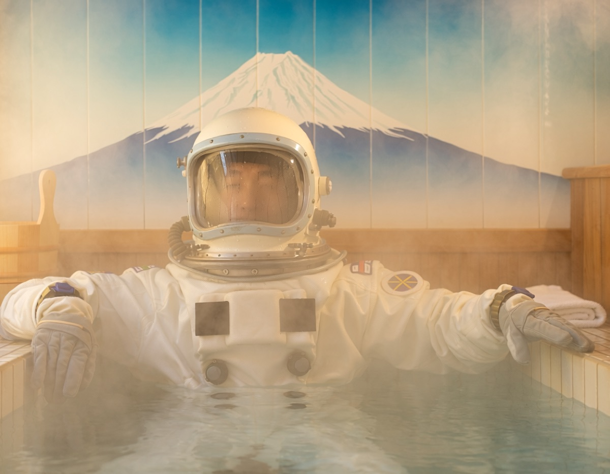
「ヘルメットが湯気で曇っている」の一言が効いています。細かい状態をひとつ指定すると、絵ににおいが出ます。
An astronaut in a full space suit relaxing chest-deep in a traditional Japanese sento bath, helmet fogged up, steam rising, tiled mural of Mount Fuji behind, photorealistic, cinematic warm light
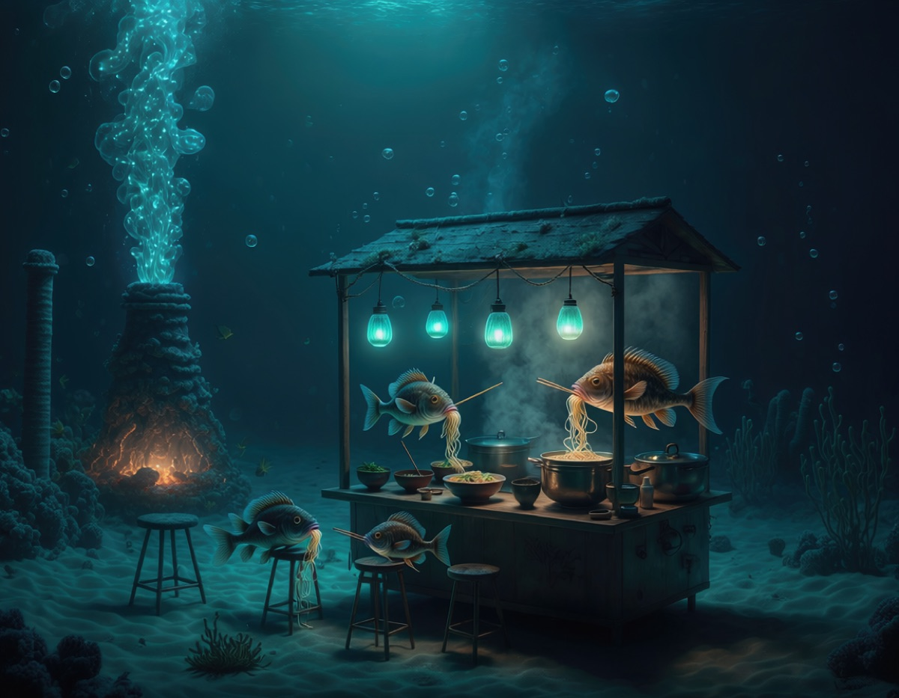
光源を「生き物の光」に指定すると、色が全部そこに引っぱられます。暗い場所ほど、光の出どころを決めるのが大事です。
A tiny ramen stall glowing on the deep sea floor next to a hydrothermal vent, anglerfish customers sitting on stools, bioluminescent lanterns, photorealistic underwater cinematography
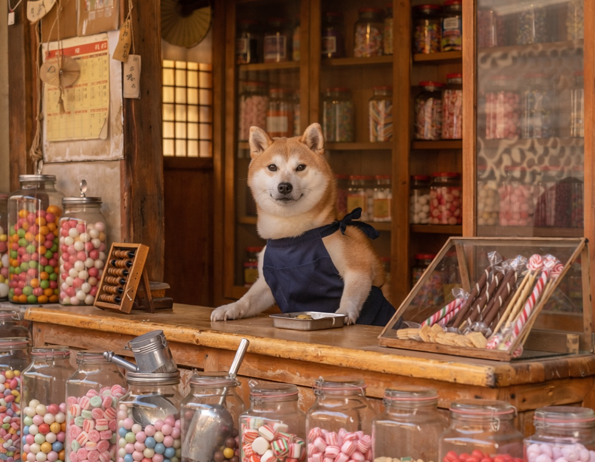
「昭和の」と時代を入れると、棚も瓶も照明も一式そろいます。時代の指定は、小物をまとめて呼ぶ合図になります。
A shiba inu minding the counter of an old Showa era Japanese penny candy shop, wearing a shop apron, surrounded by glass jars and colorful sweets, evening light, photorealistic documentary photo
「スポーツ写真」と「砂ぼこり」を入れています。撮り方の言葉は、構図と空気の両方を連れてきます。
A team of sloths in headbands playing tug of war on a dusty school sports day field, cheering crowd blurred behind, photorealistic sports photography, dust in the air, golden hour
数を8と決めて、腕の役割まで書いています。数が意味を持つときは、数字で言い切ったほうが通ります。
An octopus working as a librarian, holding eight different open books with its arms at once, wearing small reading glasses, in a dim old library full of wooden shelves, photorealistic, soft window light
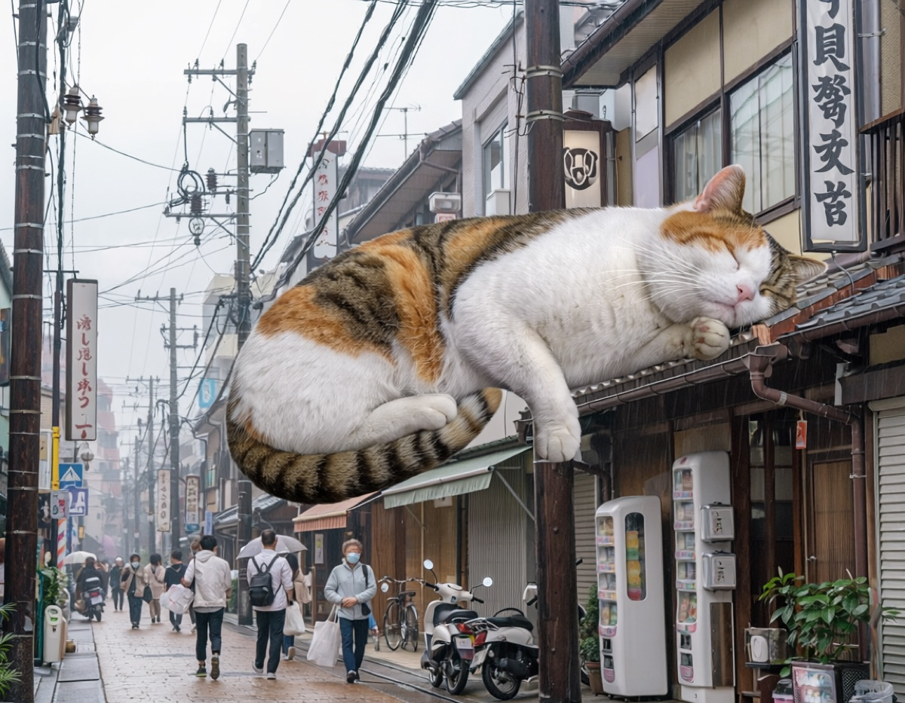
「まわりの人は気づかずに通り過ぎている」と書くと、絵の中の世界では当たり前のこと、という顔になります。
A gigantic calico cat curled up asleep across a quiet Japanese shopping street, ordinary commuters walking past without noticing, cables and shop signs, overcast morning, photorealistic wide shot
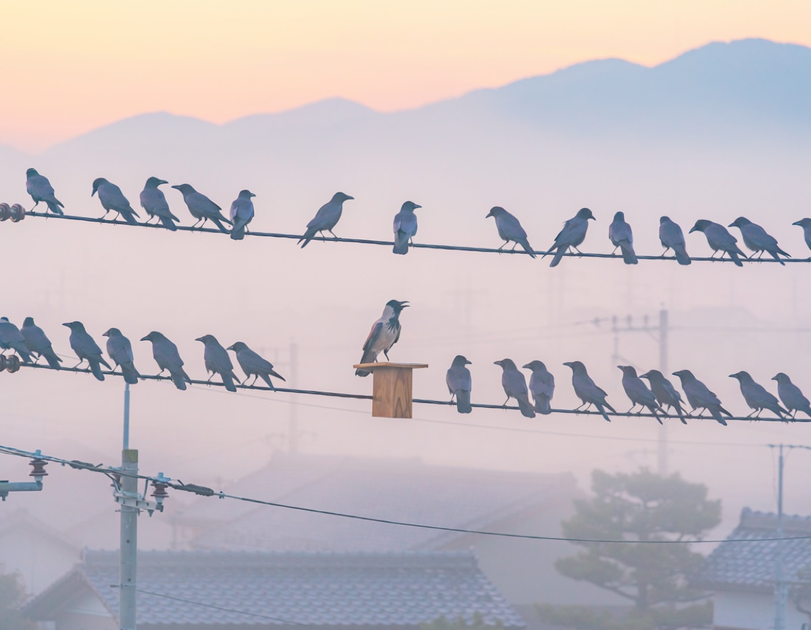
「望遠で」を入れると、遠くの山も家も、いい具合につぶれてくれます。背景をぼかしたいときは撮り方で言います。
A morning assembly of crows lined up neatly on power lines at dawn, one older crow standing on a small wooden podium addressing them, misty Japanese suburb below, photorealistic telephoto shot
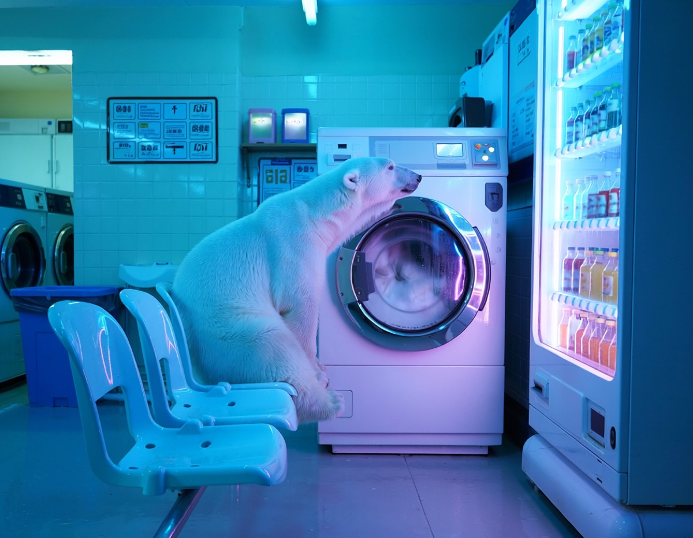
青い蛍光灯と自販機の光だけを指定しています。光を2つに絞ると、写真の色が決まります。
A polar bear sitting alone in a late night Japanese laundromat, watching the washing machine spin, vending machine glow, empty plastic chairs, photorealistic cinematic night photography
「天板にみかん」まで書いています。日本の人ならみんな知っている小物をひとつ足すと、絵が急に自分ごとになります。
Japanese snow monkeys sitting around a kotatsu table set up in the snow beside a steaming hot spring, blankets over their laps, mandarin oranges on top, heavy snowfall, photorealistic
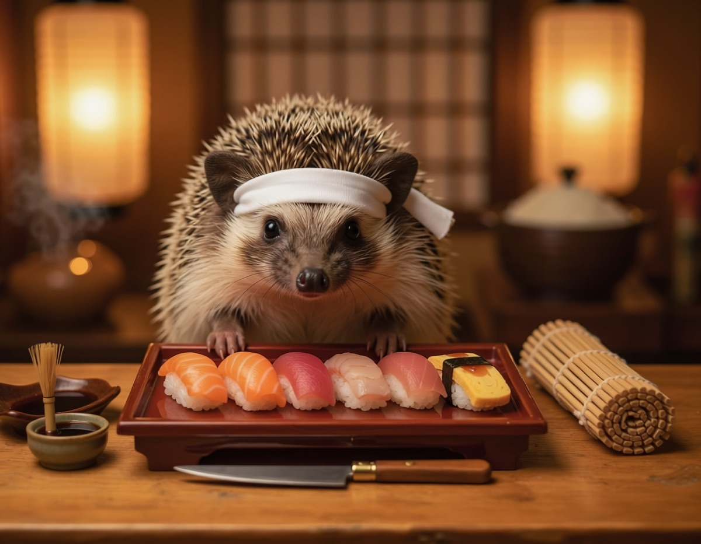
「料理の接写で」と言うと、寿司のほうにピントと照明が寄ります。見せたいものが小さいときに使えます。
A hedgehog working as a sushi chef behind a tiny wooden counter, wearing a white headband, tiny nigiri lined up on a lacquer tray, warm lantern light, photorealistic macro food photography
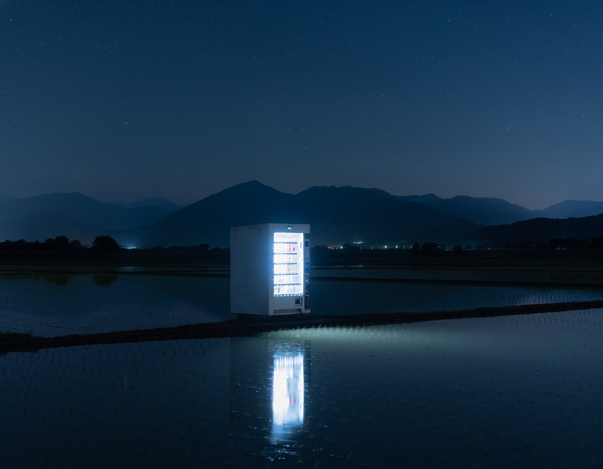
動物も人も出てきません。「ひとつだけ光っている」という状況だけで1枚になります。引き算でも作れます。
A single vending machine glowing alone in the middle of a vast dark rice paddy at night, its light reflecting in the water, distant mountains, stars above, photorealistic long exposure
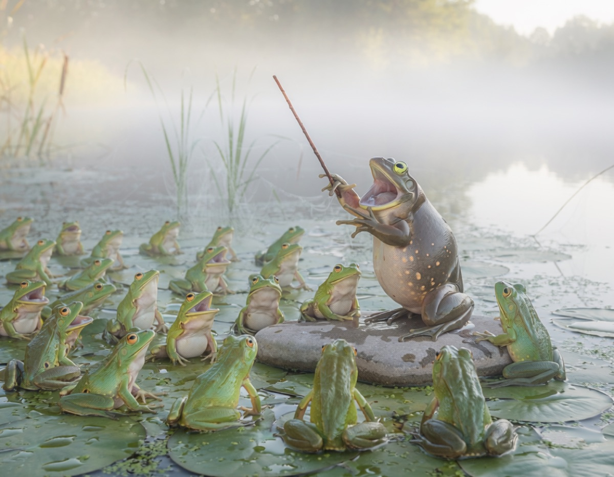
指揮者を1匹だけ別の場所に立たせています。役割の違う1匹をつくると、集団の絵に中心ができます。
A choir of green tree frogs standing in neat rows on lily pads, mouths open singing, a conductor frog with a twig baton on a stone, morning mist over the pond, photorealistic wildlife photography
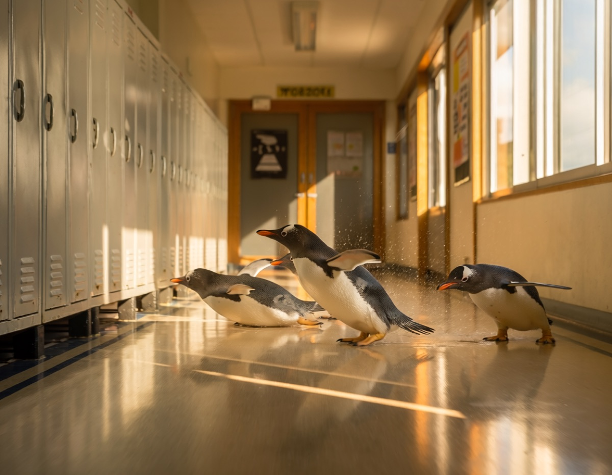
「低い位置から」と「まわりが流れて写る」を指定しています。動きを出したいときは、カメラの高さとぶれで言います。
Penguins belly sliding down a polished empty Japanese school corridor after hours, lockers and windows blurred with motion, low angle action shot, photorealistic, late afternoon light
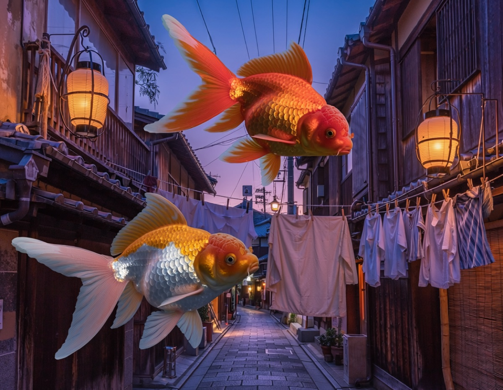
ありえない絵ですが、下に洗濯物と提灯という現実を置いています。ふしぎな絵ほど、地面のほうを現実にします。
Giant goldfish swimming slowly through the air above a narrow old Japanese alley at dusk, their fins rippling, laundry hanging below, warm lanterns, photorealistic magical realism
「机と椅子が全部1メートル浮いている」と書きましたが、机は床に置かれたままでした。無人の教室としてはきれいなので、失敗と気づかず使ってしまいそうな1枚です。
ここから分かることがひとつあります。ありえない状態は、たくさん並べると素直に描いてくれません。やるなら、浮かせるのは椅子1脚だけ、のように的をひとつに絞ります。指示が通ったかどうかは、必ず自分の目で確かめたほうがいいという話でもあります。
An empty Japanese classroom where every desk and chair floats silently one meter above the floor, chalk dust suspended in the sunbeams, nobody there, photorealistic, quiet uncanny atmosphere
「人は写さない」と書いています。人を出さないと決めるだけで、風景写真の顔になります。
A lone grand piano standing on a rocky mountain summit above a sea of clouds at sunrise, sheet music scattered by wind, no people, photorealistic wide landscape photography
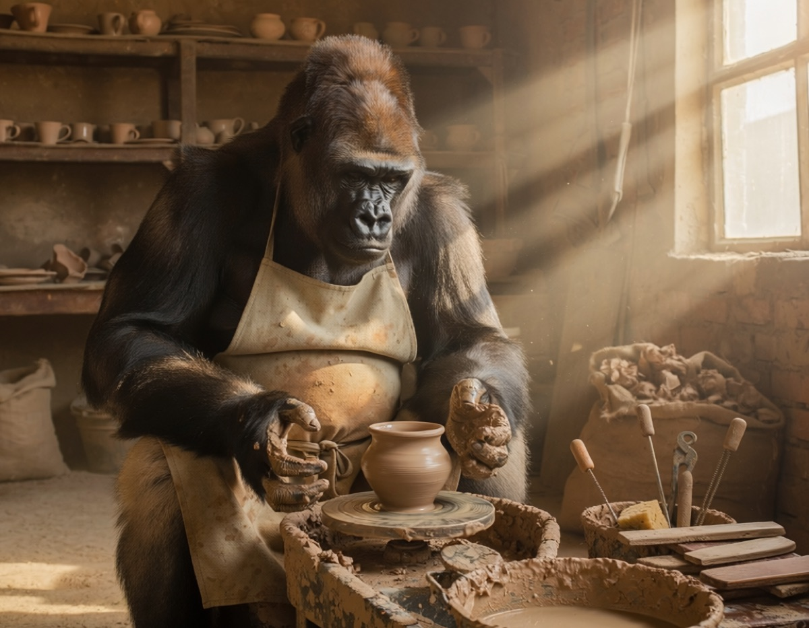
「大きな手なのに、さわり方はていねい」と書きました。ちぐはぐな2つを並べると、表情のある1枚になります。
A gorilla in a clay stained apron carefully throwing a small pot on a potter's wheel, huge hands and delicate touch, dusty sunlit workshop, photorealistic documentary portrait